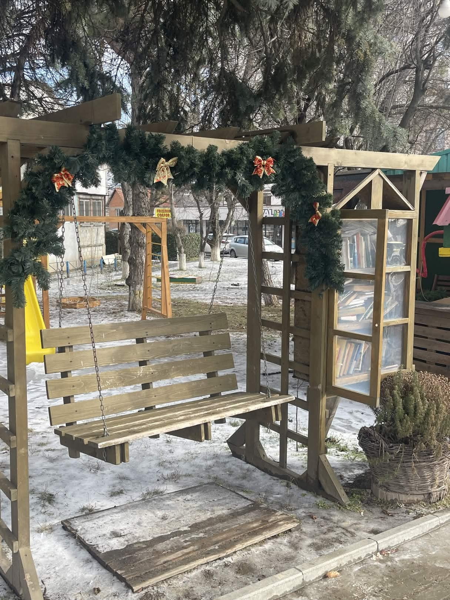

Soul Market is a small local business in the city of Soarelui — Ialoveni.
Characterized by its rural contrast compared to the rest of the city, Soul Market sells not only coffee, but also natural herbs imported from other countries, teas, gift sets, natural bee honey, and last but not least, a unique and beautiful experience every time you enter the place. The benches outside and the nearby playground are part of a perfect atmosphere for children, and therefore, the rest of the families.
Soul Market
History
The history of the kiosk is as good as the things sold here. In 2015, when I was on a visit to Poland, I went to a center for people with disabilities, and seeing this center, I wished there was something similar in my town, Ialoveni, and in 2018 my wish was fulfilled.


